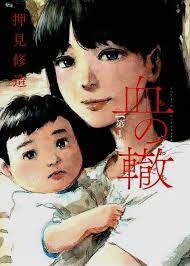

Oshi no Ko es una serie de manga japonés escrita por Aka Akasaka e ilustrada por Mengo Yokoyari. Comenzó su serialización en la revista Shūkan Young Jump de Shūeisha desde el 23 de abril de 2020, con sus capítulos recopilados hasta el momento en diez volúmenes tankōbon.

Rastros de Sangre es un manga escrito e ilustrado por Shūzō Oshimi. Comenzó a publicarse en febrero de 2017 en la revista Big Comic Superior de la editorial Shōgakukan. La historia sigue la vida de un tímido estudiante y su madre sobreprotectora.